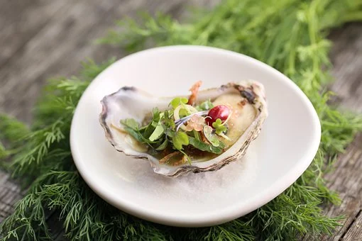

Ostras
Ingredientes:
- ostras
- 1 alho-poró cortado em finas rodelas
- 50g de creme de leite fresco
- 1 cebola roxa pequena cortada em finas fatias
- 1 galho de dill picado
- 3 colheres de sopa de vinho branco seco
- Sal a gosto
- Pimenta do reino a gosto
- 20g de manteiga
- 30g de queijo tipo emmental
Modo de preparo:
- Abra as ostras deixando-as na casca inferior e jogue fora a casca superior.
- Em uma assadeira disponha as ostras em cima de um leito de sal grosso para estabilizá-las.
- Em uma caçarola coloque a manteiga para derreter e adicione a cebola e o alho-poró.
- Em fogo baixo mexa sem parar para que os ingredientes murchem, mas sem dourá-los.
- Adicione sal, pimenta do reino, o vinho branco e o creme de leite fresco.
- Deixe reduzir por 5 minutos em fogo médio.
- Coloque este molho em cada ostra e cubra com queijo antes de gratinar no forno em temperatura média por aproximativamente de 15 a 20 minutos.
- Sirva imediatamente.